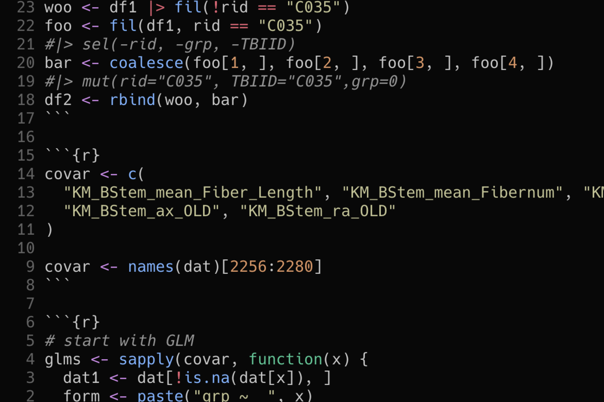

install.packages(c("knitr", "rmarkdown"))Rapid Conversion of Draft R Scripts to Formal Rmd Reports
r
rmarkdown
reproducibility
I did not really know how to quickly convert a working R script into a presentable report until I discovered knitr::spin() and a few supporting workflows that changed how I share analytical results.

Introduction
I did not really know how to quickly convert a working R script into a presentable report until I ran into a situation where a collaborator needed results the same afternoon. The analysis was complete, the code was tested, but the output was a tangled mix of console printouts and saved PNG files scattered across a directory. Assembling those fragments into a coherent document took longer than the analysis itself.
Three things many R developers are often reluctant to tackle: code documentation, testing, and report preparation. Of these, report preparation tends to be the most urgent. When a supervisor or reviewer asks for results, they rarely want a raw R script. They want tables, figures, narrative context, and a document they can read without opening RStudio.
We walk through several approaches to bridging the gap between a working R script and a finished R Markdown report. The goal is practical: reduce the friction between “my code works” and “here is a document someone can read.”
More formally, this post documents the script-to-document promotion path in the Document layer of the Workflow Construct described in A Workflow Construct for the Modern Data Scientist. The Document layer holds the artifact a reader sees, a rendered HTML or PDF report. The script-to-document promotion is the operation that lifts a working R script onto that layer without rewriting the analysis. This is the most frequent project-tier transition for an applied biostatistician and is the specific concern the post addresses.
Motivations
- I had a folder of working R scripts that produced correct results but existed only as console output and disconnected figure files.
- Collaborators asked for formatted reports repeatedly, and each time I rebuilt the narrative from scratch rather than converting what already existed.
- I wanted a systematic approach that would take minutes, not hours, to move from script to document.
- I needed to preserve the exact code that generated the results, not rewrite it for presentation purposes.
- I was curious whether
knitr::spin()could genuinely replace manual chunk insertion for simple analytical scripts.
Objectives
- Understand the
knitr::spin()function and how it converts annotated R scripts directly into R Markdown documents. - Compare the
spin()approach against manual conversion (adding YAML headers and wrapping code in chunks by hand). - Use RStudio’s built-in “Compile Report” feature to generate quick reports without modifying the original script.
- Develop a reusable template workflow for consistent formatting across multiple script-to-report conversions.
I am documenting my learning process here. Errors and better approaches are welcome; see the contact section.
Prerequisites and Setup
The techniques in this post require a standard R installation with the knitr and rmarkdown packages. RStudio is recommended for the “Compile Report” feature but is not strictly necessary for the command-line workflows.
Background: This post assumes familiarity with writing R scripts and a basic understanding of what R Markdown documents look like. No prior experience with knitr::spin() is needed.
library(knitr)
library(rmarkdown)What is Script-to-Report Conversion?
Script-to-report conversion is the process of transforming a plain R script (a .R file containing code, comments, and possibly some inline output) into a formatted document that weaves together code, results, and narrative text. The output is typically an HTML page, PDF, or Word document that a non-programmer can read without needing to run any code.
Think of it as the reverse of the usual R Markdown workflow. Instead of starting with a .qmd or .Rmd file and embedding code chunks, one starts with a working .R file and adds just enough structure to produce a readable report. The key insight is that existing comments can serve as the narrative, and existing code already produces the figures and tables needed.
Getting Started: The Problem with Raw Scripts
Consider a typical analytical R script. It loads data, fits a model, prints a summary, and saves a plot. The code works perfectly, but the output is fragmented: summary statistics appear in the console, the plot is saved to disk, and there is no unified document tying them together.
library(ggplot2)
data(mtcars)
mtcars$cyl <- as.factor(mtcars$cyl)
summary(mtcars[, c("mpg", "wt", "hp")])
model <- lm(mpg ~ wt + hp, data = mtcars)
summary(model)
ggplot(mtcars, aes(x = wt, y = mpg, color = cyl)) +
geom_point(size = 3) +
geom_smooth(method = "lm", se = FALSE) +
theme_minimal() +
labs(
title = "Fuel Efficiency by Weight",
x = "Weight (1000 lbs)",
y = "Miles per Gallon"
)
ggsave("mpg_by_weight.png", width = 8, height = 5)This script runs correctly, but sharing its results requires manually assembling the console output, the saved figure, and some written context into a separate document. The three approaches described below solve this problem at different levels of effort and control.
Approach 1: knitr::spin() (The Fastest Path)
The knitr::spin() function converts a specially annotated R script directly into an R Markdown document (and optionally renders it in one step). The key is a lightweight annotation syntax that uses R comments to embed narrative text and chunk options without restructuring the script.
How spin() Annotation Works
In a spin-compatible R script, three comment styles carry special meaning:
#'(hash-apostrophe) marks lines as narrative Markdown text.#-(hash-hyphen) starts a new unnamed code chunk.#+ label, option=value(hash-plus) starts a named chunk with explicit options.
Everything else is treated as R code inside the current chunk. This means an existing script can be annotated with minimal changes.
Annotating an Existing Script
Here is the same analysis script rewritten with spin annotations. The original code is unchanged; only comments have been modified.
#' ---
#' title: "Fuel Efficiency Analysis"
#' author: "Ronald G. Thomas"
#' date: today
#' output: html_document
#' ---
#'
#' # Overview
#'
#' This report examines the relationship between
#' vehicle weight, horsepower, and fuel efficiency
#' using the mtcars dataset.
#+ setup, message=FALSE
library(ggplot2)
#' # Data Preparation
data(mtcars)
mtcars$cyl <- as.factor(mtcars$cyl)
#' # Summary Statistics
#'
#' The dataset contains 32 observations across
#' three engine configurations.
summary(mtcars[, c("mpg", "wt", "hp")])
#' # Linear Model
#'
#' We fit a multiple regression predicting miles
#' per gallon from weight and horsepower.
model <- lm(mpg ~ wt + hp, data = mtcars)
summary(model)
#' # Visualization
#'
#' The scatterplot below shows the relationship
#' between weight and fuel efficiency, colored
#' by cylinder count.
#+ fig-mpg, fig.width=8, fig.height=5
ggplot(mtcars, aes(x = wt, y = mpg, color = cyl)) +
geom_point(size = 3) +
geom_smooth(method = "lm", se = FALSE) +
theme_minimal() +
labs(
title = "Fuel Efficiency by Weight",
x = "Weight (1000 lbs)",
y = "Miles per Gallon"
)Running spin()
To convert and render in one step:
knitr::spin("analysis_script.R", knit = FALSE)Setting knit = FALSE produces the .Rmd file without rendering it, which is useful for inspecting or editing the intermediate Markdown before producing the final document. To generate the report directly:
knitr::spin("analysis_script.R", knit = TRUE)The function also accepts a format argument for producing different output types:
rmarkdown::render(
knitr::spin("analysis_script.R", knit = FALSE),
output_format = "pdf_document"
)Approach 2: Manual Conversion
Manual conversion involves creating a new .Rmd file and migrating code from the R script into fenced code chunks. This approach provides the most control over document structure but requires the most effort.
The Conversion Steps
The process follows a predictable sequence:
- Create a new
.Rmdfile with a YAML header. - Copy code from the
.Rfile into fenced code chunks (```{r} ... ```). - Convert existing comments into narrative Markdown text outside the chunks.
- Add chunk options for figure sizing, echo control, and caching.
- Render the document with
rmarkdown::render()or the RStudio Knit button.
A Minimal Template for Manual Conversion
The following template provides a starting point that covers the most common needs:
Rmd template structure
# The YAML header goes at the top of the .Rmd file:
#
# ---
# title: "Analysis Report"
# author: "Your Name"
# date: "`r Sys.Date()`"
# output:
# html_document:
# toc: true
# toc_float: true
# code_folding: hide
# ---
#
# Then structure content as:
#
# # Section Heading
#
# Narrative text explaining what comes next.
#
# ```{r chunk-name, fig.width=8, fig.height=5}
# your_code_here()
# ```
#
# Interpretation of the output above.When Manual Conversion Makes Sense
Manual conversion is preferable when the R script contains code that should not appear in the report (data cleaning steps, debugging statements, exploratory tangents). The conversion process naturally requires curation of what the reader sees, which often improves the document.
Approach 3: RStudio’s “Compile Report”
RStudio includes a “Compile Report” feature that converts any R script into a report without modifying the file at all. This is the zero-effort option.
How to Use It
- Open an
.Rfile in RStudio. - Click the notebook icon in the editor toolbar (or use
Ctrl+Shift+K/Cmd+Shift+K). - Select the output format (HTML, PDF, or Word).
- RStudio runs
knitr::spin()behind the scenes and renders the result.
The feature interprets #' comments as Markdown, just like spin(). If the script has no special annotations, all code and standard comments appear in the output as a simple code listing with results.
Practical Considerations
The “Compile Report” approach works well for quick sharing within a team but has limitations. The output format options are restricted to what rmarkdown supports natively. There is no opportunity to edit the intermediate .Rmd before rendering. And the feature does not support Quarto-specific options like code-fold or cross-references.
For scripts that already use #' annotations, this feature provides the fastest possible path from code to document. For scripts without annotations, the output is functional but visually plain.
Verification
After annotating a script and running spin(), confirm that the conversion and rendering pipeline works end to end.
knitr::spin("analysis_script.R", knit = FALSE)
file.exists("analysis_script.Rmd")rmarkdown::render("analysis_script.Rmd")
file.exists("analysis_script.html")readLines("analysis_script.Rmd", n = 5)If all three checks return TRUE or display the expected YAML header, the spin pipeline is working correctly.
Daily Workflow
| Task | Command |
|---|---|
| Annotate script | Add #', #+, #- comments to .R file |
| Convert to Rmd | knitr::spin("script.R", knit = FALSE) |
| Inspect intermediate | file.edit("script.Rmd") |
| Render to HTML | rmarkdown::render("script.Rmd") |
| Render to PDF | rmarkdown::render("script.Rmd", output_format = "pdf_document") |
| Quick report (RStudio) | Ctrl+Shift+K on open .R file |
| Batch convert | lapply(list.files(pattern = "\\.R$"), knitr::spin, knit = FALSE) |
Things to Watch Out For
Chunk boundaries matter in spin(). Every line of code between
#'blocks becomes a single chunk. If separate chunks are needed for different options (such as hiding one block while showing another), inserting a#+line starts a new chunk explicitly.YAML must be exact. The
#' ---lines in a spin-annotated script must follow YAML syntax precisely. A missing space after a colon or an incorrect indentation level will cause the render to fail with an uninformative error message.Figure paths can conflict. When
spin()runs, it creates a figures directory based on the script name. If two scripts share a name in different directories, the figure directories may collide. Use explicitfig.pathchunk options to avoid this.Encoding issues on Windows. Scripts with non-ASCII characters (accented names, special symbols) may fail during the spin conversion. Ensure the script is saved with UTF-8 encoding before running
spin().The “Compile Report” button uses the global R environment. Scripts that depend on objects created in a previous session will fail when rendered in a clean session. Testing with
rmarkdown::render()in a fresh R session catches environment dependencies.
Comparing the Three Approaches
The choice between spin(), manual conversion, and “Compile Report” depends on the complexity of the script and the quality expectations for the output.
| Criterion | spin() |
Manual | Compile Report |
|---|---|---|---|
| Setup time | 5-15 min | 20-60 min | 0 min |
| Output control | Moderate | Full | Limited |
| Preserves original script | Yes | No (new file) | Yes |
| Supports Quarto | No | Yes | No |
| Chunk-level options | Yes (#+) |
Yes | Yes (#+) |
| Narrative quality | Good | Best | Basic |
| Suitable for publication | Sometimes | Yes | Rarely |
| Learning curve | Low | Low | None |
For quick internal sharing, “Compile Report” or spin() with minimal annotations is sufficient. For external-facing documents, grant proposals, or publications, manual conversion into a .qmd or .Rmd file provides the control needed for professional formatting.
Uninstall / Rollback
The spin workflow does not modify system configuration. To revert, delete the generated intermediate and output files.
file.remove("analysis_script.Rmd")
file.remove("analysis_script.html")
unlink("analysis_script_files", recursive = TRUE)The original .R script remains unchanged because spin() reads from it without modifying it. No packages need to be uninstalled; knitr and rmarkdown are standard components of any R installation.
What Did We Learn?
Lessons Learned
Conceptual Understanding:
- The distinction between a script and a report is primarily about narrative structure, not about code correctness. The same analysis can be either, depending on how comments and output are organized.
spin()treats R comments as a lightweight markup language. Understanding the three annotation styles (#',#-,#+) is sufficient to convert most analytical scripts.- Report generation works best when the original script is already well-commented. Poorly commented code requires substantial editing regardless of the conversion method.
- The intermediate
.Rmdproduced byspin()is a standard R Markdown file that can be further edited, making the spin-then-edit workflow a practical middle ground.
Technical Skills:
knitr::spin()withknit = FALSEis the most useful invocation because it produces an editable intermediate file.- RStudio’s “Compile Report” calls
spin()internally, so learning spin annotation syntax benefits both workflows. - Wrapping
spin()output inrmarkdown::render()enables programmatic control over output format, parameters, and rendering options. - For Quarto-based projects, manual conversion remains necessary because
spin()produces.Rmdfiles, not.qmdfiles.
Gotchas and Pitfalls:
- Forgetting the space after
#'causes the line to be treated as a code comment rather than narrative text. - Scripts that modify the working directory with
setwd()inside the file will break the spin rendering process becauseknitrmanages the working directory itself. - Large scripts with many plots can produce extremely long reports. Consider splitting into focused analytical sections before converting.
- The
spin()YAML block must start and end with#' ---on its own line. Inline YAML after other content on the same line fails silently.
Limitations
knitr::spin()produces R Markdown (.Rmd) output only. It does not generate Quarto (.qmd) files, which limits access to Quarto-specific features such as cross-references, callouts, and multi-format rendering.- The annotation syntax (
#',#+,#-) is specific to theknitrpackage. Scripts annotated forspin()will not render correctly with other literate programming tools. - “Compile Report” is an RStudio-specific feature. VS Code, Positron, and terminal-based workflows do not have an equivalent one-click option (though calling
spin()from the command line achieves the same result). - None of these approaches handle multi-file analyses well. If the analysis spans several scripts that must run in sequence, a proper R Markdown or Quarto document with sourced scripts is more appropriate.
- The formatting produced by
spin()is functional but not publication-ready. Figures lack captions and cross-references unless manually added in a post-processing step.
Opportunities for Improvement
- Write a wrapper function that runs
spin()and then performs automated post-processing: adding figure captions, inserting a table of contents, and converting the output to.qmdformat. - Develop a standard annotation template for R scripts that includes placeholders for YAML, section headers, and figure captions, reducing the cognitive load of adding annotations.
- Explore the
litrpackage, which takes the opposite approach: generating R packages from R Markdown documents, providing a complementary perspective on the code-document relationship. - Build a Makefile or shell script that batch-converts all
.Rfiles in a project directory, producing a set of HTML reports with consistent styling. - Investigate whether a custom
knitroutput hook could translatespin()output directly into Quarto.qmdsyntax, bypassing the.Rmdintermediate step.
Wrapping Up
Converting R scripts to formatted reports does not need to be a time-consuming process. The knitr::spin() function provides a lightweight path that preserves the original script while adding just enough structure to produce a readable document. For situations requiring more control, manual conversion into R Markdown or Quarto gives full access to formatting, cross-references, and publication-quality output.
What I found most useful in practice was the spin-then-edit workflow: run spin() with knit = FALSE to generate the .Rmd skeleton, then spend a few minutes refining the narrative and chunk options before rendering. This consistently took less than fifteen minutes for a typical analytical script, compared to forty-five minutes or more for a from- scratch manual conversion.
In conclusion, four points merit emphasis. First, knitr::spin() converts annotated .R scripts to .Rmd using three comment styles: #', #+, and #-. Second, RStudio’s “Compile Report” runs spin() behind the scenes with zero setup. Third, manual conversion provides full control and remains necessary for Quarto-based projects. Fourth, the spin-then-edit workflow balances speed with document quality.
For R scripts sitting in a project folder producing results that no one else can easily read, running knitr::spin("your_script.R", knit = FALSE) and inspecting the output is worthwhile. The result is often closer to a finished report than anticipated.
See Also
Related resources:
- knitr::spin() documentation: Yihui Xie’s official documentation and examples for the spin function.
- R Markdown: The Definitive Guide: Comprehensive reference covering all aspects of R Markdown document creation.
- Quarto documentation: Official guide for Quarto, the next-generation publishing system for R, Python, and Julia.
- knitr in a knutshell: Karl Broman’s concise tutorial on knitr, including spin usage patterns.
- R for Data Science, 2nd edition: Hadley Wickham and colleagues’ guide to modern R workflows, including communication and reporting chapters.
Reproducibility
This post describes workflow patterns rather than a specific analysis pipeline. The code examples use base R, knitr, rmarkdown, and ggplot2. To test the spin workflow:
# Save the annotated script as analysis_script.R,
# then run:
knitr::spin("analysis_script.R", knit = FALSE)
# Inspect the generated .Rmd file:
file.edit("analysis_script.Rmd")
# Render to HTML:
rmarkdown::render("analysis_script.Rmd")Session information:
sessionInfo()Key package versions:
- R: 4.4+
- knitr: 1.45+
- rmarkdown: 2.25+
- ggplot2: 3.5+ (for figure examples)
Let’s Connect
- GitHub: rgt47
- Twitter/X: @rgt47
- LinkedIn: Ronald Glenn Thomas
- Email: rgtlab.org/contact
I would enjoy hearing from you if:
- An error or a better approach to any of the code in this post comes to mind.
- There are suggestions for topics to see covered.
- The interest is in discussing R programming, data science, or reproducible research.
- There are questions about anything in this tutorial.
- The goal is simply to say hello and connect.